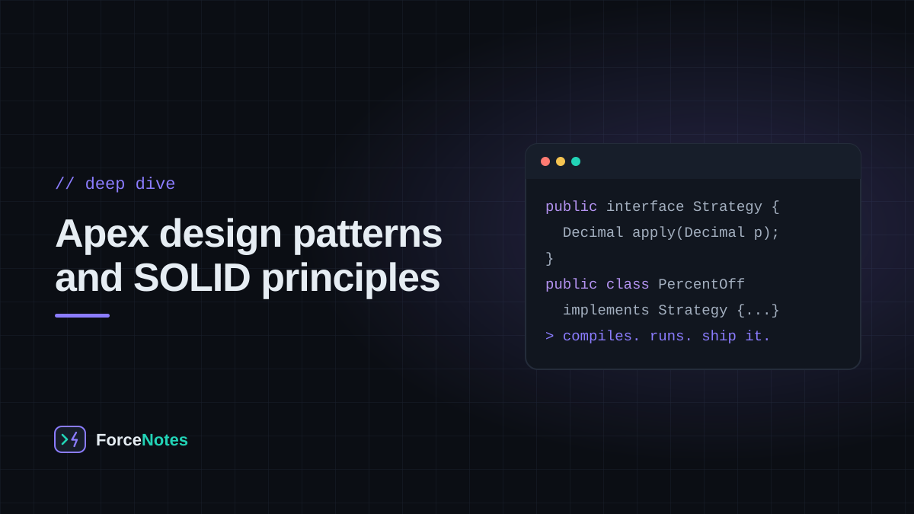

Write Apex that survives bulk data, new teammates and next year’s requirements. SOLID, ten classic patterns and the Salesforce enterprise layers, each with code you can run and break in the browser.

Why patterns matter on Salesforce
Design patterns are named, proven shapes for solving problems that keep coming back. On Salesforce they earn their keep for three reasons: governor limits punish messy code at scale, many teams edit the same org so predictable structure matters, and tests are mandatory, which is hard when classes create their own dependencies.
Every example below is plain Apex that you can run in the browser. Press Run it in the playground to open the code in the Apex playground, change it, and break it on purpose. Examples that need an org (SOQL, DML, triggers) are shown separately and labelled.
Learn by editing. Run a pattern once, then change one thing: add a new strategy, rename a method, remove an override. The compiler messages teach as much as the pattern does.
SOLID principles
SOLID is five guidelines for classes that are easy to change and easy to test. They are guidelines, not laws: use them when a class starts to hurt.
S: Single Responsibility
Principle
A class should have one job, and therefore one reason to change.
Use it when
A class mixes different concerns: calculating, formatting, saving, emailing. Changing one breaks another.
In Salesforce
The classic smell is a trigger or a 900-line AccountService that validates, queries, calls out and sends emails. Keep triggers thin and push each concern into its own class.
Watch out
Do not split into dozens of tiny classes just to look tidy. Split when two things change for different reasons.
// BAD: one class that calculates, formats AND sends. Three reasons to change.
public class InvoiceEverything {
public String process(Decimal net) {
Decimal total = net * 1.2;
String text = 'Invoice total: ' + total;
return 'Sent -> ' + text;
}
}
// GOOD: each class has one job and one reason to change.
public class InvoiceCalculator {
public Decimal total(Decimal net) { return net * 1.2; }
}
public class InvoiceFormatter {
public String format(Decimal total) { return 'Invoice total: ' + total; }
}
public class InvoiceSender {
public String send(String body) { return 'Sent -> ' + body; }
}
public class InvoiceService {
private InvoiceCalculator calc = new InvoiceCalculator();
private InvoiceFormatter formatter = new InvoiceFormatter();
private InvoiceSender sender = new InvoiceSender();
public String process(Decimal net) {
return sender.send(formatter.format(calc.total(net)));
}
}
System.debug(new InvoiceEverything().process(100));
System.debug(new InvoiceService().process(100));
Code should be open for extension but closed for modification: add behaviour by adding a class, not by editing a long if / else.
Use it when
Every new region, product type or rule means reopening the same method.
In Salesforce
Pair it with Custom Metadata: a record names the class to use, and Type.forName() loads it. Admins and new developers add rules without touching tested code.
Watch out
Two options do not need an interface. Wait until the third variation shows up.
// BAD: every new shipping method means editing this method (and risking old ones).
public class ShippingBad {
public Decimal cost(String method, Decimal kg) {
if (method == 'standard') { return kg * 2; }
else if (method == 'express') { return kg * 5 + 10; }
return 0;
}
}
// GOOD: new behaviour is a new class. Existing code stays untouched.
public interface ShippingRate { Decimal cost(Decimal kg); }
public class StandardRate implements ShippingRate { public Decimal cost(Decimal kg) { return kg * 2; } }
public class ExpressRate implements ShippingRate { public Decimal cost(Decimal kg) { return kg * 5 + 10; } }
// Added later without touching anything above:
public class DroneRate implements ShippingRate { public Decimal cost(Decimal kg) { return kg * 9 + 25; } }
public class ShippingCalculator {
public Decimal quote(ShippingRate rate, Decimal kg) { return rate.cost(kg); }
}
ShippingCalculator calc = new ShippingCalculator();
System.debug('Standard 3kg: ' + calc.quote(new StandardRate(), 3));
System.debug('Express 3kg: ' + calc.quote(new ExpressRate(), 3));
System.debug('Drone 3kg: ' + calc.quote(new DroneRate(), 3));
Anywhere you use a parent class, any subclass must work without surprises.
Use it when
A subclass throws "not supported", returns nonsense, or quietly ignores what the parent promises.
In Salesforce
Common with virtual base classes for trigger handlers or batch jobs: a subclass that overrides a method and skips required work (like logging or validation) breaks every caller.
Watch out
If you override a method just to throw an exception, the inheritance is wrong. Use an interface for the capability instead.
// BAD: a Penguin IS-A Bird, but it cannot fly, so code that trusts Bird.fly() breaks.
public virtual class Bird {
public virtual String fly() { return 'flapping into the sky'; }
}
public class Penguin extends Bird {
public override String fly() { throw new UnsupportedOperationException('Penguins cannot fly'); }
}
List<Bird> birds = new List<Bird>{ new Bird(), new Penguin() };
for (Bird b : birds) {
try {
System.debug(b.fly());
} catch (UnsupportedOperationException e) {
System.debug('LSP violation: ' + e.getMessage());
}
}
// GOOD: only birds that really fly promise to fly.
public interface Flyer { String fly(); }
public virtual class Animal { public virtual String move() { return 'moving'; } }
public class Sparrow extends Animal implements Flyer {
public String fly() { return 'sparrow flaps'; }
}
public class Penguin2 extends Animal {
public override String move() { return 'penguin waddles'; }
}
List<Flyer> flyers = new List<Flyer>{ new Sparrow() };
for (Flyer f : flyers) { System.debug(f.fly()); }
System.debug(new Penguin2().move());
Prefer several small interfaces over one big one, so classes only implement what they use.
Use it when
Implementers have empty methods or methods that throw because the interface asks for too much.
In Salesforce
Salesforce does this itself: Database.Batchable, Schedulable and Queueable are separate small interfaces, so a class opts in to exactly the behaviour it needs.
Watch out
Do not make an interface per method. Group methods that are always used together.
// BAD: one fat interface forces classes to implement things they do not need.
public interface WorkerBad {
void work();
void eat();
void code();
}
// GOOD: small, focused interfaces. Implement only what you use.
public interface Workable { String work(); }
public interface Codable { String code(); }
public interface Feedable { String eat(); }
public class Developer implements Workable, Codable, Feedable {
public String work() { return 'developer plans'; }
public String code() { return 'developer writes Apex'; }
public String eat() { return 'developer eats lunch'; }
}
public class Robot implements Workable {
public String work() { return 'robot assembles parts'; }
// no eat(), no code(): nothing to fake
}
List<Workable> staff = new List<Workable>{ new Developer(), new Robot() };
for (Workable w : staff) { System.debug(w.work()); }
Object o = staff.get(0);
if (o instanceof Codable) { System.debug(((Codable) o).code()); }
High-level code should depend on abstractions, and the concrete pieces should be passed in.
Use it when
You cannot unit test a class because it creates its own payment client, callout or selector with new.
In Salesforce
This is how you get fast tests. HttpCalloutMock and the System.StubProvider API exist for exactly this: swap the real dependency for a fake one.
Watch out
Injecting everything everywhere adds noise. Inject the things that talk to the outside world.
// High level code depends on an abstraction, not on a concrete class.
public interface PaymentGateway {
Boolean charge(Decimal amount);
}
public class CardGateway implements PaymentGateway {
public Boolean charge(Decimal amount) { System.debug('Charging card ' + amount); return true; }
}
// A test double: lets us test OrderProcessor without a real payment system
public class FakeGateway implements PaymentGateway {
public List<Decimal> charges = new List<Decimal>();
public Boolean charge(Decimal amount) { charges.add(amount); return amount < 1000; }
}
public class OrderProcessor {
private PaymentGateway gateway;
// The dependency is injected, not created with "new" inside
public OrderProcessor(PaymentGateway gateway) { this.gateway = gateway; }
public String checkout(Decimal total) {
return gateway.charge(total) ? 'PAID' : 'DECLINED';
}
}
System.debug(new OrderProcessor(new CardGateway()).checkout(80));
// "Unit test" with the fake
FakeGateway fake = new FakeGateway();
OrderProcessor op = new OrderProcessor(fake);
Assert.areEqual('PAID', op.checkout(250));
Assert.areEqual('DECLINED', op.checkout(5000));
Assert.areEqual(2, fake.charges.size());
System.debug('All assertions passed');
Make sure only one instance of a class exists, and give everyone the same one.
Use it when
Expensive set-up that should happen once, such as reading configuration or Custom Metadata.
In Salesforce
In Apex, static variables live for one transaction only. So a Singleton is a per-transaction cache: perfect for avoiding the same query ten times in one save, but it is never shared between users or requests.
Watch out
Do not treat it as global storage between transactions. Use Platform Cache for that. Singletons also make tests harder, so expose a way to reset or replace them.
public class AppConfig {
private static AppConfig instance;
private Map<String, String> settings = new Map<String, String>();
// Private constructor: nobody else can call "new AppConfig()"
private AppConfig() {
// Imagine this being loaded once from Custom Metadata
settings.put('region', 'EMEA');
settings.put('maxRetries', '3');
System.debug('AppConfig created (this prints only once)');
}
public static AppConfig getInstance() {
if (instance == null) {
instance = new AppConfig();
}
return instance;
}
public String get(String key) { return settings.get(key); }
}
System.debug(AppConfig.getInstance().get('region'));
System.debug(AppConfig.getInstance().get('maxRetries'));
System.debug('Same object? ' + (AppConfig.getInstance() == AppConfig.getInstance()));
Ask a factory for what you need. It decides which class to create.
Use it when
The caller should not know which concrete class to use, or the choice depends on data.
In Salesforce
Great with Custom Metadata: a record says Channel = SMS, Class = SmsNotifier and the factory uses Type.forName(className).newInstance(). Adding a channel needs no code change in the factory.
Watch out
A factory with a giant switch just moves the if / else problem. Prefer metadata-driven lookups once you have more than a few types.
public interface Notifier {
String send(String to, String message);
}
public class EmailNotifier implements Notifier {
public String send(String to, String message) { return 'EMAIL to ' + to + ': ' + message; }
}
public class SmsNotifier implements Notifier {
public String send(String to, String message) { return 'SMS to ' + to + ': ' + message; }
}
public class UnknownChannelException extends Exception {}
public class NotifierFactory {
public static Notifier create(String channel) {
switch on channel.toLowerCase() {
when 'email' { return new EmailNotifier(); }
when 'sms' { return new SmsNotifier(); }
when else { throw new UnknownChannelException('No notifier for: ' + channel); }
}
}
}
// The caller never says "new EmailNotifier()". It only asks for a channel.
System.debug(NotifierFactory.create('email').send('sam@example.com', 'Your case was updated'));
System.debug(NotifierFactory.create('SMS').send('+15550100', 'Code: 4821'));
try {
NotifierFactory.create('pigeon');
} catch (UnknownChannelException e) {
System.debug('Error: ' + e.getMessage());
}
Build a complex object step by step, with readable method names, then call build().
Use it when
A constructor would need six parameters, or an object has many optional settings.
In Salesforce
Callout request bodies, report definitions, and above all test data builders: new ContactBuilder().withLastName('Lee').build() keeps tests short and clear.
Watch out
Validate inside build() so you never hand back a half-made object.
public class ReportRequest {
public String title;
public String owner;
public Integer maxRows;
public Boolean includeCharts;
public class RequestException extends Exception {}
public class Builder {
private ReportRequest r = new ReportRequest();
public Builder withTitle(String title) { r.title = title; return this; }
public Builder withOwner(String owner) { r.owner = owner; return this; }
public Builder limitedTo(Integer rows) { r.maxRows = rows; return this; }
public Builder withCharts() { r.includeCharts = true; return this; }
public ReportRequest build() {
if (String.isBlank(r.title)) {
throw new RequestException('A title is required');
}
if (r.maxRows == null) { r.maxRows = 100; } // sensible default
if (r.includeCharts == null) { r.includeCharts = false; }
return r;
}
}
}
ReportRequest req = new ReportRequest.Builder()
.withTitle('Q4 pipeline')
.withOwner('Sam')
.withCharts()
.build();
System.debug(req.title + ' / ' + req.owner + ' / rows=' + req.maxRows + ' / charts=' + req.includeCharts);
try {
new ReportRequest.Builder().withOwner('Sam').build();
} catch (ReportRequest.RequestException e) {
System.debug('Rejected: ' + e.getMessage());
}
Publish an event, and let any number of listeners react without the publisher knowing them.
Use it when
One action (an order ships) should trigger several independent reactions (audit, alert, sync).
In Salesforce
Inside one transaction, use listener interfaces like this. Across transactions and systems, the platform version is Platform Events and Change Data Capture.
Watch out
In-memory listeners run in the same transaction and share its limits. Heavy work belongs in async Apex or a Platform Event subscriber.
public interface Listener {
void onEvent(String name, String payload);
}
public class EventBus {
private Map<String, List<Listener>> listeners = new Map<String, List<Listener>>();
public void subscribe(String eventName, Listener l) {
if (!listeners.containsKey(eventName)) {
listeners.put(eventName, new List<Listener>());
}
listeners.get(eventName).add(l);
}
public Integer publish(String eventName, String payload) {
if (!listeners.containsKey(eventName)) { return 0; }
for (Listener l : listeners.get(eventName)) { l.onEvent(eventName, payload); }
return listeners.get(eventName).size();
}
}
public class AuditLog implements Listener {
public void onEvent(String name, String payload) { System.debug('[audit] ' + name + ': ' + payload); }
}
public class SlackAlert implements Listener {
public void onEvent(String name, String payload) { System.debug('[slack] heads up: ' + payload); }
}
EventBus bus = new EventBus();
bus.subscribe('OrderShipped', new AuditLog());
bus.subscribe('OrderShipped', new SlackAlert());
bus.subscribe('OrderCancelled', new AuditLog());
System.debug('Notified: ' + bus.publish('OrderShipped', 'Order 1001'));
System.debug('Notified: ' + bus.publish('OrderCancelled', 'Order 1002'));
System.debug('Notified: ' + bus.publish('Nobody', 'ignored'));
Walk through a collection one item at a time, without exposing how it is stored.
Use it when
You need to loop over something that is not a plain List, such as paged API results.
In Salesforce
Batch Apex lets start() return an Iterable, so a batch can process data that did not come from SOQL.
Watch out
Keep state inside the iterator, and remember that each transaction creates a new one.
public class Countdown implements Iterable<Integer>, Iterator<Integer> {
private Integer current;
public Countdown(Integer from) { current = from; }
public Iterator<Integer> iterator() { return this; }
public Boolean hasNext() { return current > 0; }
public Integer next() {
Integer value = current;
current--;
return value;
}
}
// Any Iterable works in a for loop, even your own class.
for (Integer n : new Countdown(5)) {
System.debug(n);
}
Large orgs layer their code. The open-source fflib Apex Common library popularised Selector, Domain, Service and Unit of Work layers. These two work without an org:
Trigger handler
Salesforce
One trigger per object that does nothing but hand over to a handler class.
Use it when
Always, for Apex triggers. It gives you a predictable order and testable logic.
In Salesforce
The trigger calls new AccountTriggerHandler().run(), and the handler routes to beforeInsert, afterUpdate and so on, with a recursion guard and a bypass switch (Custom Permission or Custom Metadata) for data loads.
Watch out
The simulated example passes a list in by hand. In a real org the records come from Trigger.new and Trigger.oldMap.
// The real thing runs inside a trigger with Trigger.new. Here we pass a list in by hand.
public class Customer {
public String name; public String tier;
public Customer(String name, String tier) { this.name = name; this.tier = tier; }
public override String toString() { return name + '(' + tier + ')'; }
}
public virtual class TriggerHandler {
private static Set<String> bypassed = new Set<String>();
public static void bypass(String handlerName) { bypassed.add(handlerName); }
public static void clearBypass(String handlerName) { bypassed.remove(handlerName); }
public void run(String context, List<Customer> records) {
String me = getName();
if (bypassed.contains(me)) { System.debug(me + ' is bypassed'); return; }
switch on context {
when 'before insert' { beforeInsert(records); }
when 'after insert' { afterInsert(records); }
when else { System.debug('No logic for ' + context); }
}
}
protected virtual String getName() { return 'TriggerHandler'; }
protected virtual void beforeInsert(List<Customer> records) {}
protected virtual void afterInsert(List<Customer> records) {}
}
public class CustomerHandler extends TriggerHandler {
protected override String getName() { return 'CustomerHandler'; }
protected override void beforeInsert(List<Customer> records) {
for (Customer c : records) { if (c.tier == null) { c.tier = 'Standard'; } }
}
protected override void afterInsert(List<Customer> records) {
System.debug('Welcome emails queued for ' + records.size() + ' customers');
}
}
List<Customer> batch = new List<Customer>{ new Customer('Acme', null), new Customer('Globex', 'Gold') };
CustomerHandler h = new CustomerHandler();
h.run('before insert', batch);
System.debug(batch);
h.run('after insert', batch);
TriggerHandler.bypass('CustomerHandler');
h.run('after insert', batch);
Collect every change you want to make, then save them together once.
Use it when
Business logic creates and changes many records and you need to stay inside DML limits.
In Salesforce
The open-source fflib library has fflib_SObjectUnitOfWork: registerNew, registerDirty, commitWork. It orders DML by relationship and rolls everything back if one step fails.
Watch out
Commit once, at the edge of the transaction. A commit hidden deep inside a helper brings the problem back.
// Collect changes first, then "save" them together in one go.
// In real Apex the commit step would be a single insert and update call.
public class UnitOfWork {
private List<String> newRecords = new List<String>();
private List<String> changedRecords = new List<String>();
private Integer commits = 0;
public void registerNew(String r) { newRecords.add(r); }
public void registerDirty(String r) { changedRecords.add(r); }
public void commitWork() {
System.debug('Committing ' + newRecords.size() + ' new and ' + changedRecords.size() + ' changed records in ONE transaction');
commits++;
newRecords.clear();
changedRecords.clear();
}
public Integer getCommits() { return commits; }
}
UnitOfWork uow = new UnitOfWork();
for (Integer i = 1; i <= 5; i++) { uow.registerNew('Order-' + i); }
uow.registerDirty('Account-Acme');
uow.registerDirty('Account-Globex');
// Nothing is saved until we say so, so the limits are only hit once.
uow.commitWork();
System.debug('Total commits: ' + uow.getCommits());
A common layering: the trigger or controller calls a service (business logic), which uses selectors (all SOQL) and a unit of work (all DML). Because it needs an org, this code is for reading rather than running here. Try it in a Trailhead Playground.
// Selector: all SOQL for an object lives in one class (needs an org)
public inherited sharing class AccountSelector {
public List<Account> byIds(Set<Id> ids) {
return [SELECT Id, Name, Industry FROM Account WHERE Id IN :ids WITH USER_MODE];
}
}
// Service: business logic that uses selectors and a unit of work (needs an org)
public with sharing class AccountService {
public static void tagLargeAccounts(Set<Id> ids) {
List<Account> toUpdate = new List<Account>();
for (Account a : new AccountSelector().byIds(ids)) {
if (a.NumberOfEmployees != null && a.NumberOfEmployees > 1000) {
toUpdate.add(new Account(Id = a.Id, Rating = 'Hot'));
}
}
update as user toUpdate;
}
}
// The trigger itself stays one line (needs an org)
trigger AccountTrigger on Account (before insert, before update, after update) {
new AccountTriggerHandler().run();
}
Smells to watch for
Smell
Why it hurts
Fix
SOQL or DML inside a loop
Hits governor limits at 200 records.
Collect Ids, query once, use Maps. See bulkification.
Logic inside the trigger body
Cannot be tested or reused. Several triggers fight each other.